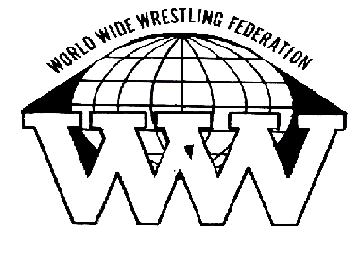
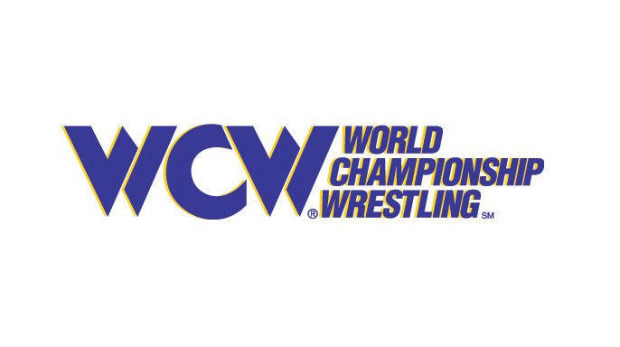

WWE es una compañía de entretenimiento deportivo y espectáculos profesionales de lucha libre. Fue fundada en 1952 y es la empresa líder en la industria de la lucha libre profesional. La empresa produce y transmite una serie de programas de televisión semanales, pay-per-views mensuales y otros eventos en vivo.
Los inicios de WWE (entonces conocido como World Wide Wrestling Federation, o WWWF) se remontan a la década de 1950, cuando Vince McMahon Sr. adquirió el control de la empresa de su padre. Durante los años 60 y 70, la WWWF se expandió a nivel nacional y se convirtió en una de las principales compañías de lucha libre profesional en los Estados Unidos.

En 1982, Vince McMahon Jr. tomó el control de la empresa de su padre y comenzó a modernizar y expandir la WWWF. Cambió su nombre a World Wrestling Federation (WWF) y comenzó a transmitir sus programas en cable y en pay-per-view. Durante esta época, la WWF introdujo nuevos personajes ficticios y eventos, incluyendo el primer Royal Rumble y SummerSlam.
Inicios de la compañia (Hasta el año 2000)
En los años 90, la WWF se convirtió en un fenómeno cultural y produjo algunas de las estrellas más grandes de la lucha libre, incluyendo a The Rock, Stone Cold Steve Austin y Hulk Hogan. También inició una guerra de marcas con su principal competidora, World Championship Wrestling (WCW). Finalmente, la WWF prevaleció en la guerra de marcas y absorbió a la WCW en 2001.

Década de los 2000 en WWE
Después de la absorción de la World Championship Wrestling (WCW) en 2001, WWE continuó su expansión y creció en popularidad a nivel mundial. La empresa introdujo una serie de nuevos programas de televisión, incluyendo Raw y SmackDown, y continuó produciendo pay-per-view mensuales y eventos en vivo.

En los años 2000, WWE también comenzó a expandir su alcance más allá de los Estados Unidos, llevando sus espectáculos a una audiencia global y produciendo programas de televisión en diferentes idiomas. La empresa también comenzó a producir películas y programas de televisión fuera del ring, incluyendo reality shows y programas de entretenimiento deportivo.
De los 2000 a la actualidad
Desde la década de 2010, WWE ha continuado su expansión y crecimiento a nivel global. La empresa ha introducido nuevos programas de televisión, incluyendo NXT y 205 Live, y ha continuado produciendo eventos en vivo y pay-per-view mensuales.
En los últimos años, WWE ha enfocado en fortalecer su presencia en línea y en las redes sociales, incluyendo la creación de su propia plataforma de transmisión en línea, WWE Network. La empresa también ha continuado produciendo programas de televisión fuera del ring y películas, y ha lanzado una serie de videojuegos basados en luchadores y eventos.